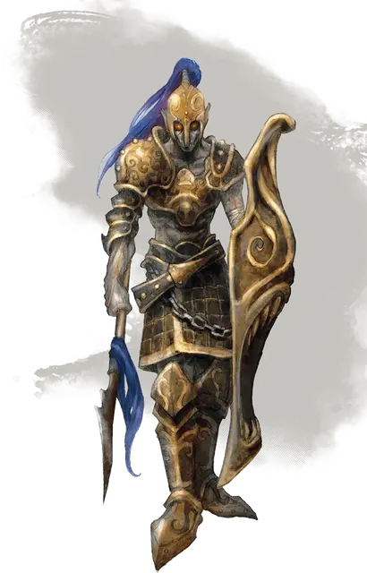

Бессмертный солдат
Undying Soldier
Средняя Нежить, нейтрально-добрая

Класс Доспеха 17 (кираса, щит)
Хиты 26 (4к8 + 8)
Скорость 30 футов
| мод | спас | ||
|---|---|---|---|
| СИЛ | 16 | +3 | +3 |
| ЛОВ | 12 | +1 | +1 |
| ТЕЛ | 14 | +2 | +2 |
| мод | спас | ||
|---|---|---|---|
| ИНТ | 11 | +0 | +0 |
| МДР | 13 | +1 | +1 |
| ХАР | 14 | +2 | +2 |
Навыки Атлетика +5, Восприятие +3, История +4, Религия +4
Уязвимость к урону некротическая энергия
Сопротивление урону излучение; дробящий, колющий, рубящий от немагических атак, кроме нанесённых посеребрённым оружием
Иммунитет к урону яд
Иммунитет к состояниям отравление, истощение
Чувства тёмное зрение 60 футов, пассивное Восприятие 13
Языки Общий, Эльфийский
Опасность 2 (450 опыта)
Бонус мастерства +2
Особенности
Свечение. Солдат волшебным образом излучает яркий свет в радиусе 10 футов и тусклый свет еще на 10 футов. Он может погасить или восстановить этот свет бонусным действием.
Сопротивление изгнанию. Бессмертный солдат совершает с преимуществом спасброски от всех эффектов, изгоняющих нежить.
Действия
Мультиатака. Солдат совершает две атаки копьём.
Копьё. Рукопашная или дальнобойная атака оружием: +5 к попаданию, досягаемость 5 футов. или дистанция 20/60 футов., одна цель. Попадание: 6 (1к6 + 3) колющего урона или 7 (1к8 + 3) колющего урона, при использовании оружия двумя руками в рукопашной атаке, плюс 9 (2к8) урона излучением, если цель исчадие или нежить.
Описание
Бессмертные солдаты составляют армию Города Мертвых в Аэренале. Они охраняют храмы Бессмертного Двора и особняки благородных семей Аэренала, а послов часто сопровождают бессмертные телохранители. Бессмертные воины носят фамильные доспехи и владеют богато украшенным оружием.
Бессмертные - это нежить, поддерживаемая положительной энергией или преданностью смертных существ. Там, где сильные отрицательные эмоции могут поймать дух в ловушку в виде призрака или приведения, появляются бессмертные - это духи, которые задерживаются, потому что их лелеют, и которые, в свою очередь, стремятся защитить и направить людей своей общины.
Хоть бессмертные и могут появиться в любом месте, для них это редкость. Единственное место, где они встречаются в значительном количестве, - это остров Аэренал, земля, чьи тесные связи с планом Ириана наполняют ее положительной энергией. Эльфы Аэренала потратили тысячи лет на разработку ритуалов, которые используют эту энергию, позволяя им сделать своих величайших граждан бессмертными.
Связанные любовью и светом. Бессмертные поддерживаются положительной энергией, независимо от того, находятся ли они в зонах проявлений, связанных с Ирианом - например, в Шае Мордай, Городе мертвых Аэрени - или свободно питаются преданностью смертных существ. Поклонение Бессмертному двору - это то, что поддерживает бессмертие Аэренала, но преданность - это ключевой ресурс. Таким образом, каждый эльф, который становится бессмертным, должен заслужить свою загробную жизнь. Если Бессмертный эльф покидает Аэренал, то ему требуется сообщество эльфов или другой источник положительной энергии, чтобы поддерживать его. В противном случае его свет угасает, и он в конце концов умирают.
Самые могущественные из бессмертных могут отделить свои души от физических форм, существуя как существа чистого света. Это состояние является конечной целью эльфов Аэренала, и такие существа известны как высшие советники.
Бессмертный двор. Почтенная нежить Аеренала объединилась в Бессмертном Дворе. Находясь в городе Шае Мордай, члены Бессмертного Двора проводят свое время в медитации, занимаются исследованиями или продолжают совершенствовать искусство, которое они практиковали в жизни. Они служат проводниками и советниками для живых, и члены благородных семей Аеренала могут совершить ритуал совета, чтобы проконсультироваться с предками в Шае Мордай. Величайшие члены Бессмертного двора - высшие советники. Эти существа чистого света сосредоточены на созерцании тайн жизни и планов и могут работать вместе, чтобы обладать божественной силой, которая позволяет им защищать Аэренал почти от любой угрозы. Однако высшие советники могут осуществлять свои планы за пределами Аеренала действуя только через преданных смертных - паладинов и жрецов Бессмертного двора.
Природа нежити. Бессмертные не нуждаются в воздухе, еде, воде или сне.